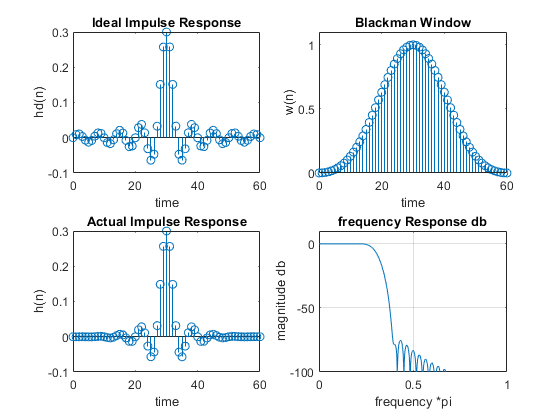
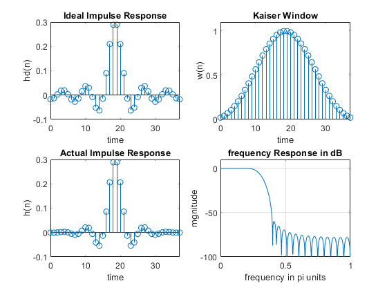
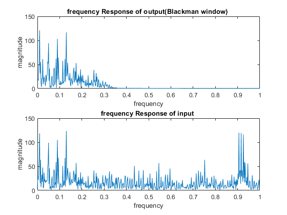
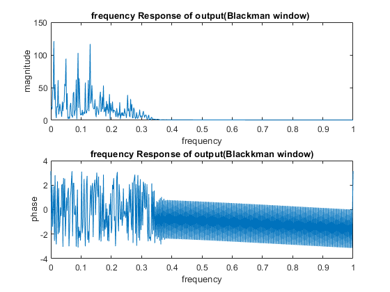
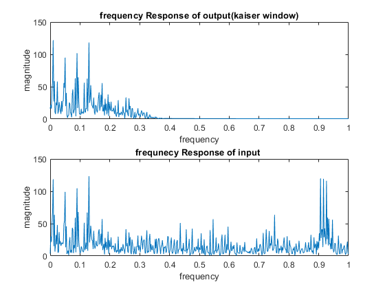
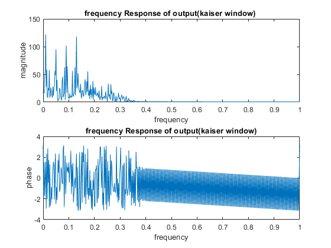

Contents
clear data
close all
clc
clear
part a Blackman window
wp = 0.2*pi;
ws = 0.4*pi;
deltaw = ws - wp;
M = ceil(12*pi/deltaw)+1 ;
disp('length of blackman window ')
disp(M)
n=0:1:M-1;
wc = (ws+wp)/2;
hd = ideal_lp(wc,M);
w_black = (blackman(M))';
h1 = hd .* w_black;
[h,w]=freqz(h1,1,1000,'whole');
h = (h(1:1:501))';
w = (w(1:1:501))';
mag=abs(h);
db = 20*log10((mag+eps)/max(mag));
delta_w = 2*pi/1000;
Rp = -(min(db(1:1:wp/delta_w+1)));
disp('actual RP OF Blackman window=')
disp(Rp)
As = -round(max(db(ws/delta_w+1:1:501)));
disp(' stopband attenuation of Blackman window')
disp(As)
figure()
subplot(2,2,1); stem(n,hd); title('Ideal Impulse Response')
axis([0 M-1 -0.1 0.3]); xlabel('time'); ylabel('hd(n)')
subplot(2,2,2); stem(n,w_black);title('Blackman Window')
axis([0 M-1 0 1.1]); xlabel('time'); ylabel('w(n)')
subplot(2,2,3); stem(n,h1);title('Actual Impulse Response')
axis([0 M-1 -0.1 0.3]); xlabel('time'); ylabel('h(n)')
subplot(2,2,4); plot(w/pi,db);title('frequency Response db');grid
axis([0 1 -100 10]); xlabel('frequency *pi'); ylabel('magnitude db')
length of blackman window
61

part b kaiser window
wp = 0.2*pi;
ws = 0.4*pi;
As = 60;
deltaw = ws - wp;
M = ceil((As-7.95)/(2.285*deltaw))+1;
disp(' length of kaiser window =')
disp(M)
n=0:1:M-1;
beta = 0.1102*(As-8.7);
disp('beta')
disp(beta)
wc = (ws+wp)/2; hd = ideal_lp(wc,M);
w_kai = (kaiser(M,beta))';
h2 = hd .* w_kai;
[h11,w11]=freqz(h2,1,1000,'whole');
h11 = (h11(1:1:501))';
w11 = (w11(1:1:501))';
mag1=abs(h11);
db1 = 20*log10((mag1+eps)/max(mag1));
delta_w = 2*pi/1000;
As = -round(max(db1(ws/delta_w+1:1:501)));
figure()
subplot(2,2,1); stem(n,hd); title('Ideal Impulse Response')
axis([0 M-1 -0.1 0.3]); xlabel('time'); ylabel('hd(n)')
subplot(2,2,2); stem(n,w_kai);title('Kaiser Window')
axis([0 M-1 0 1.1]); xlabel('time'); ylabel('w(n)')
subplot(2,2,3); stem(n,h2);title('Actual Impulse Response')
axis([0 M-1 -0.1 0.3]); xlabel('time'); ylabel('h(n)')
subplot(2,2,4);plot(w11/pi,db1);title('frequency Response in dB');grid
axis([0 1 -100 10]); xlabel('frequency in pi units'); ylabel('mgnitude')
length of kaiser window =
38
beta
5.6533

part c filtering with blackman
[x_m,fs_m] = audioread('HW3_Q1_multi_tone.wav');
time_m = 0:1/fs_m:length(x_m)/fs_m-1/fs_m;
xfilter1=filter(h1,1,x_m);
[mag2,w2]=freqz(xfilter1,1,1000,'whole');
[mag3,w3]=freqz(x_m,1,1000,'whole');
mag2 = (mag2(1:1:501))';
w2 = (w2(1:1:501))';
mag3 = (mag3(1:1:501))';
w3 = (w3(1:1:501))';
figure()
subplot(2,1,1)
plot(w2/pi,(abs(mag2)));title('frequency Response of output(Blackman window) ');
xlabel('frequency')
ylabel('magnitude')
subplot(2,1,2)
plot(w3/pi,abs(mag3));title('frequency Response of input ')
xlabel('frequency')
ylabel('magnitude')
figure()
subplot(2,1,1)
plot(w2/pi,abs(mag2));title('frequency Response of output(Blackman window) ');
xlabel('frequency')
ylabel('magnitude')
subplot(2,1,2)
plot(w2/pi,angle(mag2));title('frequency Response of output(Blackkman window)')
xlabel('frequency')
ylabel('phase')
 
part c filtering with kaiser
xfilter2=filter(h2,1,x_m);
[mag4,w4]=freqz(xfilter2,1,1000,'whole');
mag4 = (mag4(1:1:501))';
w4 = (w4(1:1:501))';
figure()
subplot(2,1,1)
plot(w4/pi,(abs(mag4)));title(' frequency Response of output(kaiser window) ')
xlabel('frequency')
ylabel('magnitude')
subplot(2,1,2)
plot(w3/pi,abs(mag3));title('frequnecy Response of input ')
xlabel('frequency')
ylabel('magnitude')
figure()
subplot(2,1,1)
plot(w4/pi,abs(mag4));title('frequency Response of output(kaiser window) ');
xlabel('frequency')
ylabel('magnitude')
subplot(2,1,2)
plot(w4/pi,angle(mag4));title('frequency Response of output(kaiser window)')
xlabel('frequency')
ylabel('phase')
 
Rectangular Window
wp1 = 0.2*pi;
ws = 0.4*pi;
deltaw = ws - wp1;
M = ceil(4*pi/deltaw) ;
n=0:1:M-1;
wc = (ws+wp1)/2;
hd = ideal_lp(wc,M);
w_rect = (rectwin(M))';
h1rect = hd .* w_rect;
xfilterr=filter(h1rect,1,x_m);
[hrect,wrect]=freqz(xfilterr,1,1000,'whole');
hrect = (hrect(1:1:501))';
wrect = (wrect(1:1:501))';
hrect=abs(hrect);
figure()
subplot(2,1,1)
plot(wrect/pi,(hrect));
title(' frequency Response of output(Rectangular window) ')
xlabel('frequency')
ylabel('magnitude')
subplot(2,1,2)
plot(w3/pi,abs(mag3));title('frequnecy Response of input ')
xlabel('frequency')
ylabel('magnitude')
function
function hd = ideal_lp(wc,M)
alpha = (M-1)/2; n = 0:1:(M-1);
m=n- alpha; fc = wc/pi; hd = fc*sinc(fc*m);
end
actual RP OF Blackman window=
0.0026
stopband attenuation of Blackman window
75